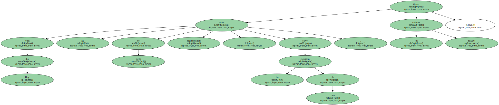

Las estrías practicadas en ellos descomponen la inercia de la bala en un movimiento giratorio que estabiliza su trayectoria , logrando una mayor precisión en el blanco.
Por eso los duelistas , al no disponer más que de armas de cañón liso , de gran alcance pero mucho menos certeras , se entregaban al factor suerte.
Hoy día todas las armas de fuego reglamentarias , salvo las escopetas de caza , tienen sus cañones rayados.
Durante todo el siglo pasado el mejor seguro de vida para todo caballero de honor era pues practicar , practicar y practicar.
Recuerden , si no , los múltiples duelos que tienen lugar en la película Barry Lindon.
Sin embargo el duelista no sólo debía estar preparado en todo momento ; estrategas de oficio conocían perversos ardides para desajustar de alguna manera la igualdad que garantizaban las reglas del juego.
Cuando la ofensa había sido grave , el ofendido tenía derecho a utilizar su propia arma , que antes podía manipularse rayando el cañón hasta la mitad sin que se percibiese a simple vista.
Artimañas poco caballerosas pero muy eficaces a la hora de salvar el pellejo.
Al fin y al cabo , como el duelo no es más que el ejercicio privado de la justicia en el que los duelistas se la toman por su mano , el abuso de los lances fue perseguido con la vieja obsesión humana de inventar artefactos que aliviaran su.
se enfocó desde muy antiguo hacia el transporte de vivos y bienes , del que tenía ejemplo en las naves que movía el viento por aguas y mares con estimable eficiencia.
Nada parecido ocurría en tierra hasta que , hacia fines del siglo XVII , el físico holandés Christian Huygens ( 1629 - 1695 ) formuló el propósito de - obtener una fuerza motriz muy importante y constante que no requiera gastos de manutención como ( la ) de los hombres o de los animales -.
A la sazón en París , Huygens se puso a trabajar con su ayudante Denis Papin , y comenzaron con un peligroso aparato : un cilindro en cuyo seno hacían explotar una carga de pólvora que impulsaba un émbolo.
La presión atmosférica devolvía el émbolo a su posición original , debido al enrarecimiento del aire del cilindro originado por la explosión.

A no dudar , éste fue el primer motor de explosión de la historia , presentado por Papin al famoso ministro de Luis XIV Jean-Baptiste Colbert , en 1674.